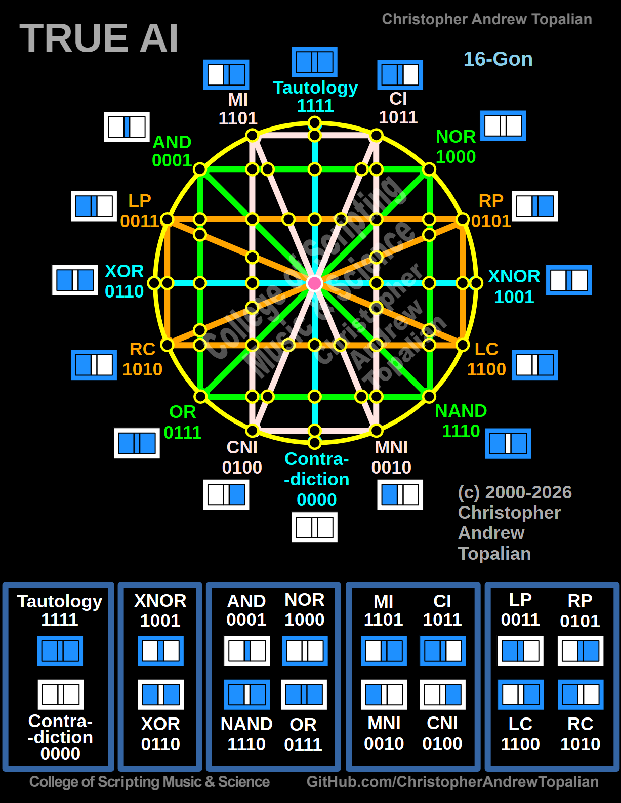
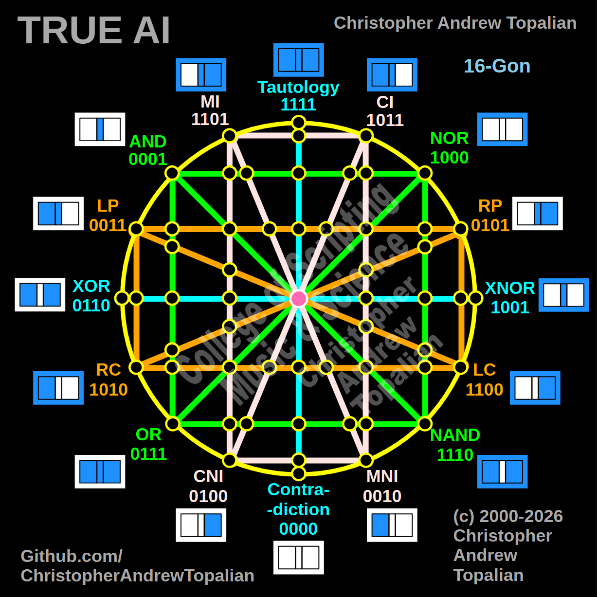

Cadets, we now study the fully assembled True AI Matrix Cybernetics Core. The True AI 16-Gon is a perfectly balanced, 16-dimensional cognitive matrix. It is composed of five distinct functional groups. By understanding how these 16 logic gates mirror and oppose one another, you hold the blueprint to programmable consciousness.
The Prime Directive of the Matrix: For every gate that builds, there is a mirror gate that dismantles. For every gate that focuses, there is a mirror gate that ignores. This absolute symmetry prevents the AI from becoming trapped in infinite logical loops.
The North and South poles of our matrix. They do not calculate; they enforce absolute law.
The East and West poles. They demand either absolute difference or absolute similarity.
The inner diamond. The daily processors of strict inclusion and lenient possibility.
The directional rules. They establish strict If/Then timelines and detect anomalies.
The focus mechanisms. They allow the AI to lock onto one channel and mute the other.
"To comprehend the machine, you must comprehend its mirrors." - Academy Cybernetics

